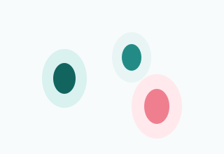
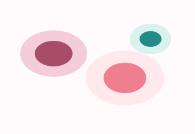
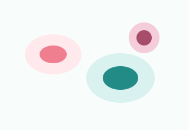

SIPaKMeD Classes
Medical Imaging + Deep Learning
Cervical Cancer Severity Classification Using Deep Learning
A modern AI-assisted workflow for analyzing Pap smear images and supporting early severity-level screening research.
Isolated Cells
About Project
Why early cervical cancer detection matters
Cervical cancer often develops gradually through detectable cellular changes. Early screening can help identify abnormal cells before the disease becomes advanced, improving treatment planning and patient outcomes.
Cervical Cancer Screening
Pap smear screening examines cervical cell samples to identify normal, inflammatory, pre-cancerous, or malignant patterns under a microscope.
Deep Learning in Imaging
Convolutional neural networks learn visual features directly from images, making them useful for research in medical image classification and triage.
Research Support Tool
This website demonstrates a project interface for uploading an image, previewing a result, and communicating model workflow and performance.
Dataset Section
SIPaKMeD Pap smear dataset overview
This project is designed around the SIPaKMeD cervical cytology dataset, a public Pap smear image dataset containing isolated cells and original cell-cluster images labeled by expert cytopathologists.
Dataset
SIPaKMeD Pap smear database
Image Count
966 cluster images, 4,049 isolated cells
Dataset Size
Nearly 6 GB archive for full dataset use
Superficial-Intermediate
Normal mature squamous epithelial cells. SIPaKMeD includes 831 isolated cells.

Parabasal
Normal immature squamous cells. SIPaKMeD includes 787 isolated cells.
Koilocytotic
Abnormal HPV-associated cells. SIPaKMeD includes 825 isolated cells.

Dyskeratotic
Abnormal keratinized cells. SIPaKMeD includes 813 isolated cells.

Metaplastic
Benign transformation-zone cells. SIPaKMeD includes 793 isolated cells.
Methodology
Deep learning workflow
The model pipeline transforms a raw Pap smear image into a severity prediction using preprocessing, feature learning, and classification layers.
Image Preprocessing
Resize, remove noise, enhance contrast, and normalize pixels.
Feature Extraction
Detect nuclei shape, texture, color, and local abnormal patterns.
CNN Model
Learn hierarchical visual features through convolutional layers.
Classification
Predict one of the five SIPaKMeD cervical cell categories.
Model Performance
Evaluation metrics dashboard
The values below are demonstration scores for UI presentation. Replace them with actual validation results after model training.
Accuracy
94%
Precision
93%
Recall
92%
F1-score
92%
Confusion Matrix
SIParaKoiloDyskMeta
SI772101
Para374013
Koilo117632
Dysk014751
Meta241072
Upload & Prediction
Try a dummy image prediction
Upload a sample cervical cell image to preview the SIPaKMeD-style interface. The JavaScript prediction is randomly generated and is not a medical diagnosis.
Team Section
Project contributors
Meet the developers behind the cervical cancer severity classification project.
Sahana M Sultanpur
Developer
sultanpurms05@gmail.comSahana A Gobbur
Developer
sahanagobbur260@gmail.comAnisha R Jartarghar
Developer
anishajartarghar29@gmail.comSunidhi G. Patil
Developer
sunidhipatil357@gmail.comContact Section
Get in touch
Use this form as a frontend demo for academic inquiries, project feedback, or collaboration requests.